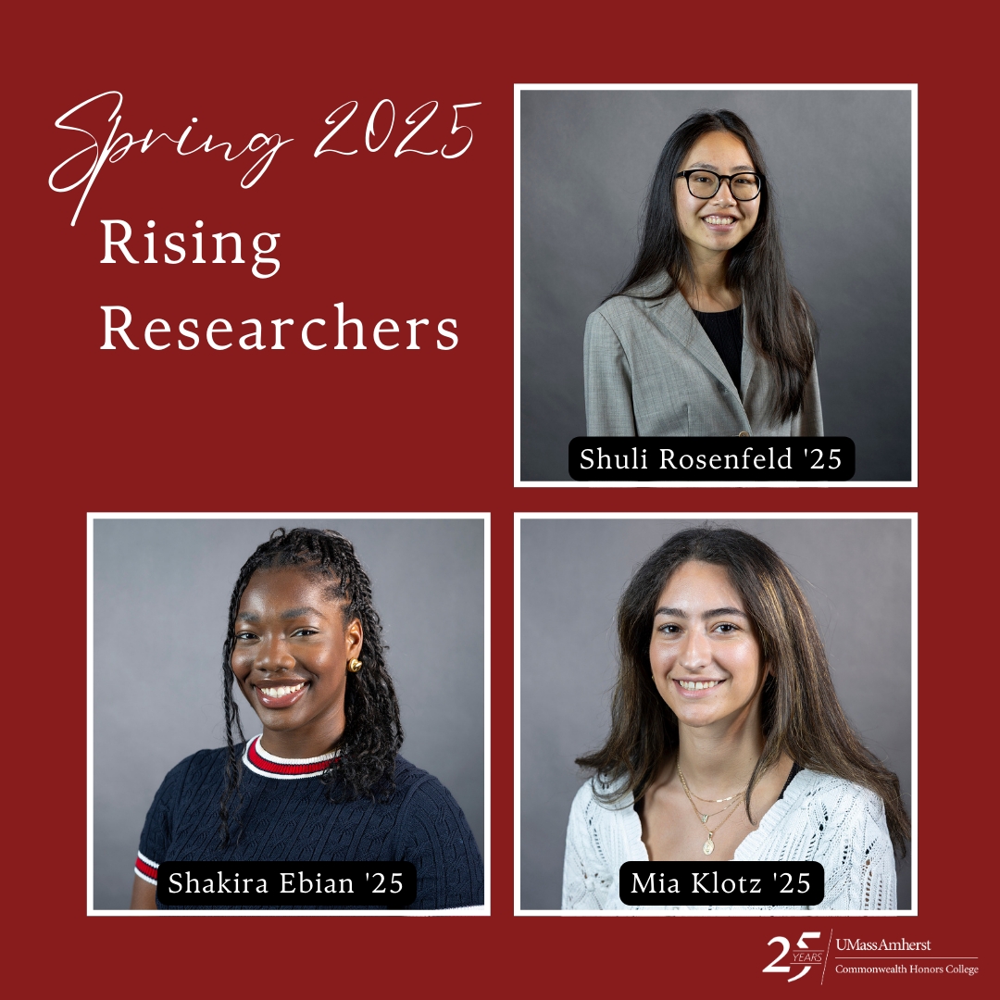
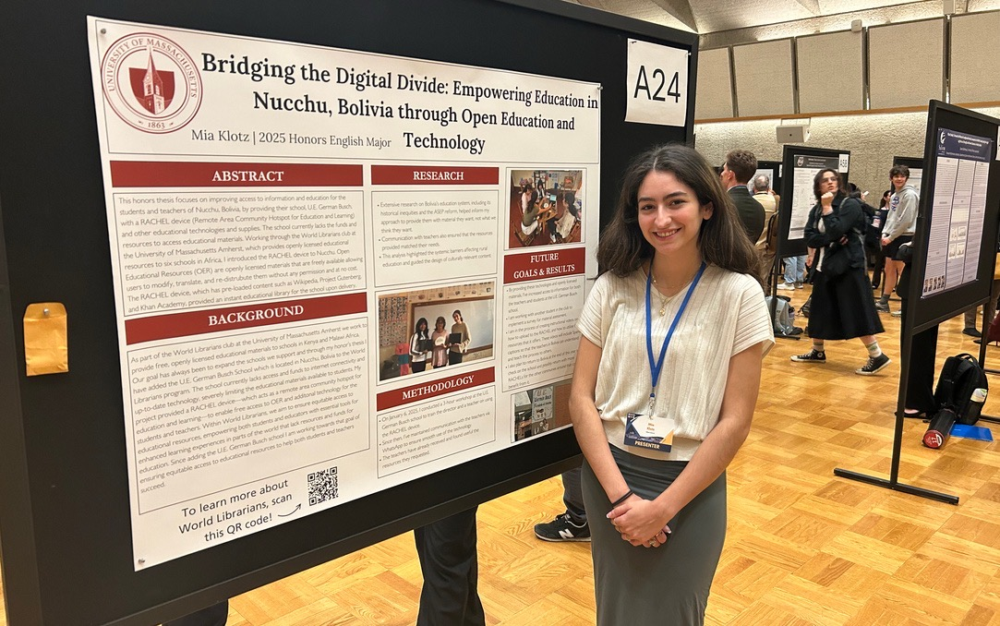

Technical Writing
MS Word Manual for Open Education Librarians
I created a 30-page Word Manual specifically for the audience, Open Education Librarians. Within this manual, there are practical tips and techniques for creating accessible documents. This guide offers easy-to-follow instructions on how to enhance document accessibility through styles, tables of contents, hyperlinks, alternative text, and sharing options. Perfect for educators, librarians, and anyone committed to creating open, accessible resources for all users.
View the manual(PDF)
Grant Proposal for students in Nucchu, Bolivia
My grant proposal, submitted to The Global Partnership for Education, seeked funding to provide 20 new HP laptops to the U.E. German Busch Primary School in Nucchu, Bolivia. With limited access to educational resources, internet, and finances, the students in this rural school face significant barriers to learning. By partnering with the World Librarians program, which has previously supported schools in Malawi and Kenya, this project aims to provide the children of Nucchu with essential technology to access educational resources and bridge the gap to a brighter future.
View the grant proposal(PDF)
InDesign Project: "A Collection of Ghost Stories and the Unknown"
A Collection of Ghost Stories and the Unknown is a book I created in my Book Design course using InDesign. The collection of short stories are all published to the public domain. as well as the images. Within InDesign I learned the tools and how to use them effectively for book publishing. After completing this project, I was able to intern for the UMass Press due to my knowledge and expertise with InDesign.
View the book jacket cover(PDF)
View the book content(PDF)
Accessibility Website Using MadCap Flare
For one of my Professional Writing and Technical Communication courses, our semester long project was to use MadCap Flare to create a resource (a set of "topic pages") that showcases our ability to write knowledgeably on the subject of digital accessibility. For my MadCap Flare wesbite I chose to focus on the WCAG Guidelines and specifically the POUR Principles. Through this project, I learned and mastered MadCap Flare and researched and developed topic pages for an area of accessibility that I am passionate about.
View the website
Honors Thesis: Bridging the Digital Divide: Empowering Education in Nucchu, Bolivia through Open Education and Technology
Honors Thesis Proposal 1
As part of the World Librarians Organization at the University of Massachusetts Amherst we work to provide free, openly licensed educational materials to schools in Kenya and Malawi Africa. Our goal has always been to expand the schools we support and through my honor's thesis I added the U.E. German Busch School which is located in Nucchu, Bolivia to the World Librarians program. For my thesis, the first proposal focuses on the research, testing, and learning process that is necessary before heading to Bolivia to start the ground work for the technology and program we are going to implement. This proposal was submitted my first semester of my senior year before I took my trip to Bolivia to bring the World Librarians program to Nucchu.
View the project(PDF)
Honors Thesis Proposal 2
For my thesis, the second proposal focuses on the findings and results from the 2 weeks spent in Nucchu, Bolivia setting up the school and beginning to receive requests from their teachers. It also includes the preparations taken to go on the trip and the research findings from the first proposal.
View the project(PDF)
Honors Thesis Final Manuscript
Finally, my honors thesis final manuscipt, focuses on pulling all of these ideas together into one cohesive manuscript that explains how the project started and where it is now. This is the final deliverable for my year-long project. I will also be providing three instructional videos on the RACHEL and a Spanish-translated "Getting Started" Guide.
View the project(PDF)
Camtasia Instructional Videos
For my honors thesis, I'm working with a device called the RACHEL (Remote Area Community Hotspot for Education and Learning), which provides offline access to educational resources but lacks documentation in languages other than English. These three instructional videos consist of (1) Powering on the RACHEL, (2) Uploading Content onto the RACHEL, and (3) Powering off the RACHEL. I also translated a starter guide from the non-profit World Possible and added my own notes and troubleshooting tips to make the device more accessible.
View the videos (Camtasia)
View the Getting Started Guide (PDF)
World Librarians Club
Open Access Week Panel: Community Over Commercialization
On October 24, the W.E.B. DuBois Library hosted a panel discussion in honor of Open Access Week (October 23-29), spotlighting the UMass World Librarians program. My team and I shared insights into the program's background and its global impact, aligning with the year's theme, “Community over Commercialization.”
View the article
View the video(YouTube)
Indiana University Ostrom Workshop Conference: Beyond the Web Speaker Series
World Librarians: How any community can build their own local library. I, as well as co-founder of World Librarians and UMass professor, Charlie Schweik presented on UMass Amherst's World Librarians Club to some faculty and staff at Indiana University. I spoke about my role being the Search Manager for World Librarians and how we send and document our search requests.
View the video(YouTube)
Honors Research Grant
In Fall 2024, I applied for a honors research grant for money to purchase chromebooks and tablets for the school in Bolivia for my honors thesis. I wasn't awarded the money to buy the technology, but they awarded $1,000 for my travel expenses. I then created a go-fund me to purchase the technology for the school. Due to this grant, I was then able to present in the Massachusetts Undergraduate Research Conference this year.
View the grant proposal(PDF)
International Association for the Study of the Commons (IASC) Conference 2025
During the week of June 16-20 I will be assisting Charles Schweik in managing the IASC Conference. In 2023, the conference was held at the University of Nairobi in Kenya. Luckily, this year the conference will be held at UMass Amherst. This conference will feature a varity of panels including; environmental commons, climate change and the commons, public policy and the commons, etc.
View the IASC website
Awards and Presentations
Rising Reasercher 2025 Award
"The UMass Amherst Rising Researcher program recognizes undergraduate students who excel in research, challenge their intellect, and exercise exceptional creativity." I recieved this award though a nomination by one of my professors and my boss at the library. I submitted my application that included a collection of my work and research towards open access information and publishing.
View the article
Rising Reasercher Award continued...
View the article on English Department site

Presentation at Massachusetts Undergraduate Research Conference (Mass URC)
The Massachusetts Undergraduate Research Conference is a yearly event where undergraduate students from across the Commonwealth of Massachusetts showcase their research in various fields. Since I recieved a grant for my honors thesis, I was invited to present at this conference.
View the MassURC website
Presentation at MassURC continued...
View my poster(PDF)

Photography & Photojournalism
Photography in Barcelona
In the spring of 2024, I had the amazing opportunity to study abroad in Barcelona, Spain. While there, I got to take a class called Photography in Barcelona. In this class, we were told to explore the city, take pictures, and return to class to edit those photos. Through these assignments, I was able to get lost in the city but also find my love for photography again.
View my photography on WordPress
Final Photography Project: Hands and the Human Connection in Spain
For our final assignment in Photography in Barcelona we had to chose a concept and produce 10-12 photos expressing that concept. We had free range on what concept we wanted to explore and were encouraged to try something outside of our comfort zone.
View the project(PDF)
Photo Essay: A Girl's Guide to Spring Break in Europe
During my time abroad I also had the opporunity to take a photojounralism course. For one of the assignments we were asked to create a photo essay that told a specific story. I chose to document and write about my friends and I's spring break trip all over Europe. For this photo essay I wanted to capture the American experience traveling through Europe for Spring Break through the eyes of three best friends.
View the project(PDF)
Feature Story: The Best Restaurant in Town: Canete
In my photojournalism course we also had an assignment where we were asked to create a feature story with someone else in our class. For our feature story, we wanted to choose a restaurant or small business that is competing in the food industry in Barcelona. With an increase in tourism since the pandemic, we wanted to focus on a specific restaurant that is thriving in Barcelona today. We chose the restaurant, Cañete, because of its growing popularity and the buzzing word of mouth that had spread about the atmosphere, food, and people.
View the project(PDF)
View the written reflection (PDF)